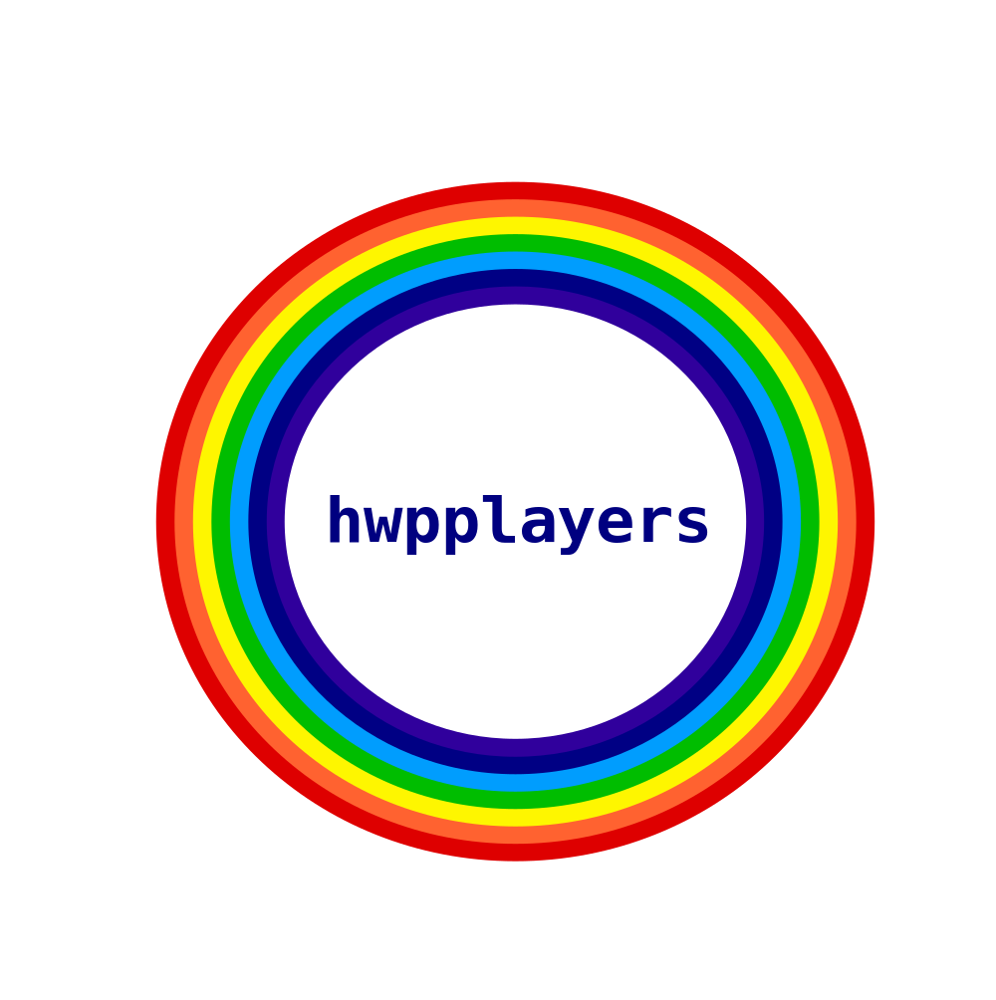

Home Coreboot procyberian hackathon
procyberian hackathon is a project backed by Masscollabs Services within the hwpplayers hackerspace.
We want to welcome newcomers who are interested in programming, hardware and science.We fork projects to look at the information but not to copy it's source code, documentation and artwork.
Contributors are who are interested in one or more projects of hwpplayers hackerspace and newcomers who don’t know how to write code or create information such as art or documentation but willing to learn to do it.
Committers are both experienced or mid-level programmers or content creators for art or documentation and have the right to add information to the code base/repository.
hwpplayers core team is responsible from maintaining all of the organization repositories, giving support to community members.And also have permission to delete content from the organization repository.
hwpplayers prefers prefers AGPLv3 or later and GPLv3 or later licenses for it’s own projects.Our own artworks are licensed under the terms of CC BY-SA 4.0 or later license and all documents written by us are licensed under the terms of GFDLv1.3 or later license.If you don’t like Core Team’s behaviours you may always fork the project and keep the codebase safe and make the project active. With these licenses information on this domain will always be free as in freedom.
A program is free software if the program’s users have the four essential freedoms:
Inspired by Masscollabs Services which is licensed under the terms of GFDLv1.3 or later.